Examples
Below is a gallery of examples
Examples: Grid handling
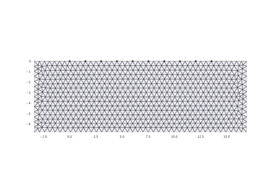
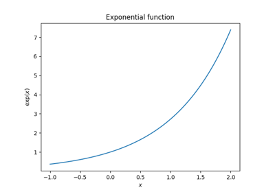
Examples: Modelling
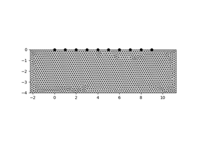
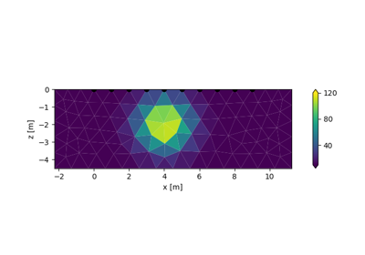
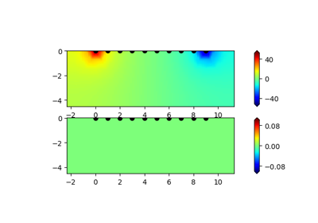
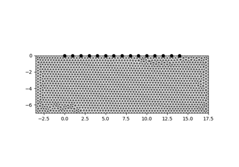
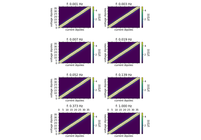
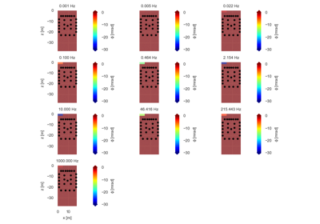
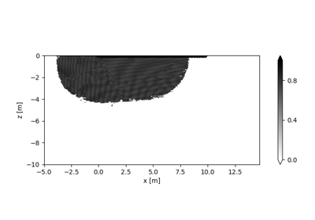
Examples: Single-frequency inversion


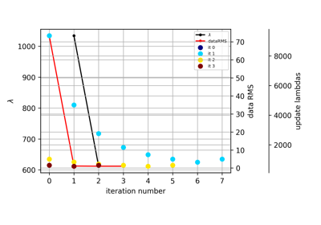
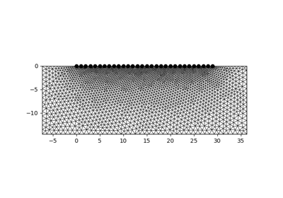
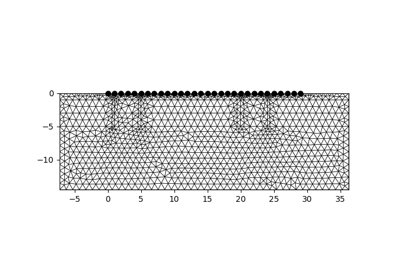

Examples: Postprocessing of inversion results

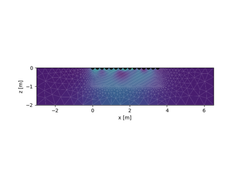


Examples: sEIT import and inversions

Calculating correction factors

Examples: Field data processing
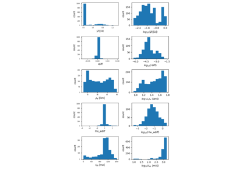